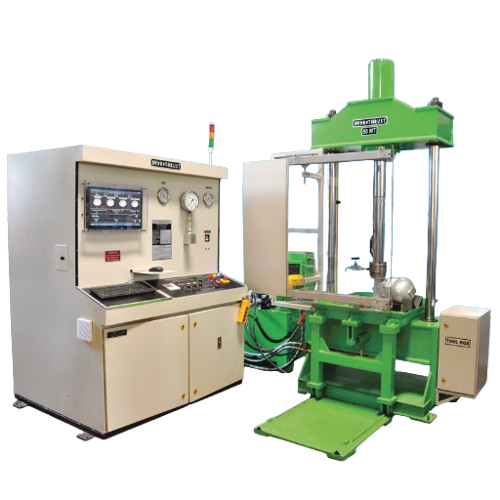
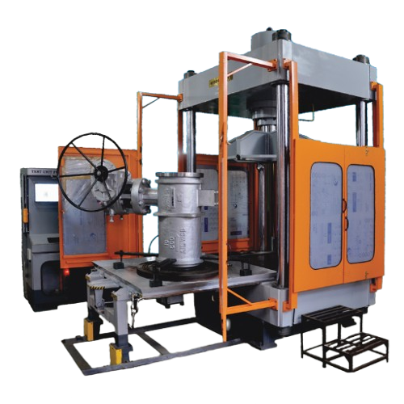
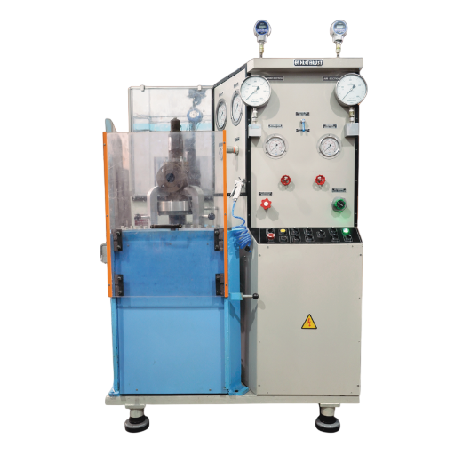
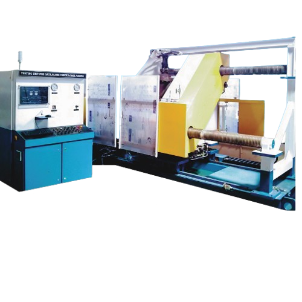
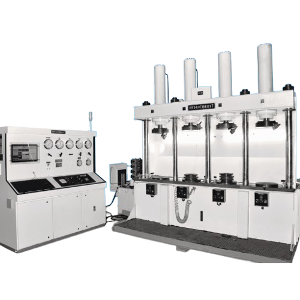
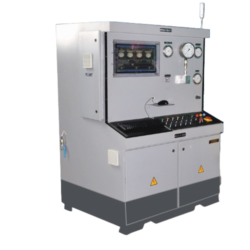
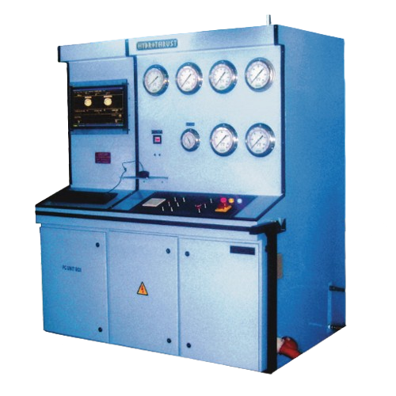

Creintors Teknosol Private Limited specializes in advanced industrial testing systems and precision engineered equipment designed for critical industrial applications. Our solutions ensure that industrial components meet the highest standards of safety, reliability, and performance.
Creintors Teknosol specializes in engineering high-performance test rigs and validation systems that guarantee precision, reliability, and advanced analytics. From hydrostatic test rigs to electronic control and diagnostic benches, our solutions serve a wide range of industries including automotive, electrical, fluid power, and R&D. With in-house design, automation, and data integration expertise, we transform conventional testing into intelligent, efficient, and future-ready solutions. Whether it's for endurance, leakage, burst, or functional testing, CTPL delivers more than machines-we deliver confidence.

VDM 0050 - Two Pillar Test Stand

Multi Station Test Rigs enable simultaneous testing of multiple valves or components, increasing operational efficiency and reducing testing time for high volume industrial environments.

Torque Rigs are used for accurate torque testing of valves and mechanical components to ensure they operate within specified performance limits.

Landing Gear Test Rigs are specialized systems used for testing landing gear components under simulated operational conditions to verify strength, durability, and mechanical reliability.

Flanged Valve Test Rigs are engineered to test flanged valves for pressure integrity, sealing performance, and operational reliability.

Loop and Simulation systems replicate real industrial process conditions to test valves, pipelines, and equipment performance under controlled environments.

CTPL also manufactures precision engineered components and specialized equipment used in steel mills and heavy industrial manufacturing facilities.